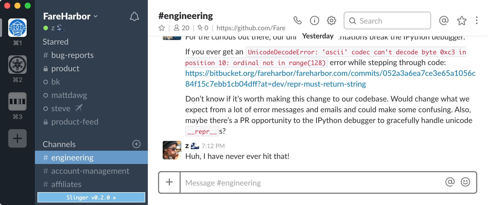

User scripts and stylesheets in Slack for OS X.

Because I got really annoyed that ⌘ + W closed the
entire Slack window instead of the current channel, group, or direct message.
Also for fun.
$ curl -s https://zachsnow.github.io/slinger/slinger.sh | bash
This patches Slack.app to load
slinger.js at launch.
If you'd prefer, you can patch Slack to load whatever user script you'd like. Instead of executing `slinger.sh`, download it then simply pass the URL of the script as an argument:
$ bash slinger.sh https://someotherdomain.com/some-other-script.js
Caveats: the script must be served over HTTPS, with
a CA-signed certificate (otherwise the underlying WebView
will not deign to load it). Furthermore the entire URL must be less than
80 characters long, because I'm not actually a reverse engineer.
Slack.app is a WebView that loads
the Slack web application, so we just patch the binary to run some Javascript in
the context of the view. The binary already has multiple calls to a WebView
method for doing just that: stringByEvaluatingJavaScriptFromString.
Instead of shoe-horning in an additional call, we re-use an existing one, replacing
the intended string with the following:
$.getScript('https://zachsnow.github.io/slinger/slinger.js');
That script then loads additional styles, adds elements to the page, binds keyboard shortcuts, and so on.
Of course, you don't need to patch the binary if you
don't want to; instead you can just open the web inspector (by right-clicking
anywhere in the view while holding ⌥ + ⇧) and enter the
above code everytime you start Slack. But that's no fun!